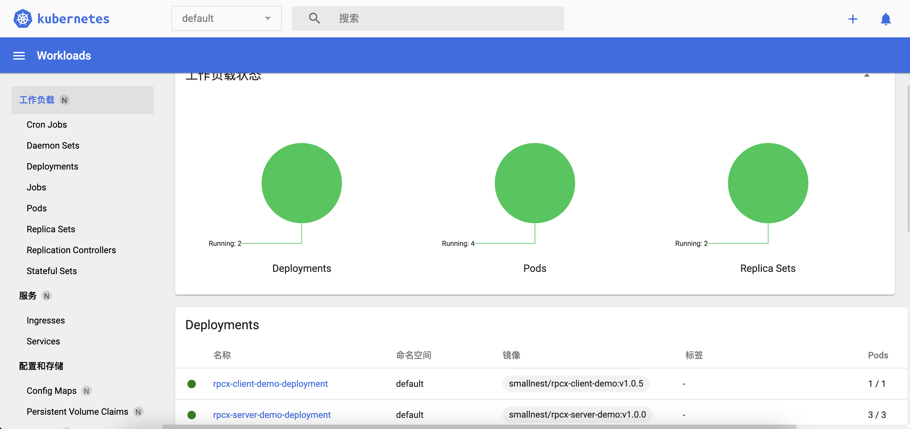

Kubernetes（常简称为K8s）是用于自动部署、扩展和管理“容器化（containerized）应用程序”的开源系统。该系统由Google设计并捐赠给Cloud Native Computing Foundation（今属Linux基金会）来使用。
它旨在提供“跨主机集群的自动部署、扩展以及运行应用程序容器的平台”。 它支持一系列容器工具，包括Docker等。
Kubernetes（在希腊语意为“舵手”或“驾驶员”）由Joe Beda、Brendan Burns和Craig McLuckie创立，并由其他谷歌工程师，包括Brian Grant和Tim Hockin等进行加盟创作，并由谷歌在2014年首次对外宣布 。 该系统的开发和设计都深受谷歌的Borg系统的影响，其许多顶级贡献者之前也是Borg系统的开发者。在谷歌内部，Kubernetes的原始代号曾经是Seven，即星际迷航中的Borg（博格人）。Kubernetes标识中舵轮有七个轮辐就是对该项目代号的致意。
Kuberbetes一直是IT行业炽手可热的技术，很多同学都想学习它，但是刚想上手遇到了一个麻烦，需要搭建一个k8s的集群。虽然云服务提供商比如阿里云、百度云都提供了k8s集群的服务，但是还需要花一笔钱去购买服务和节点。如何在自己的机器上搭建一个k8s集群学习呢？本文给你介绍一种使用minikube搭建一个k8s测试集群的方法。
安装
minikube 主要基于运行一个单节点 Kubernetes 集群，以便支持在本地机器上的 VM 内进行开发。它支持虚拟机驱动程序，如 VirtualBox、HyperV、KVM2。由于 Minikube 是 Kubernetes 体系中相对成熟的解决方案，支持的功能列表非常令人印象深刻。这些功能是负载均衡器、多集群、节点端口、持久卷、入口、仪表板或容器运行时。
基于 Minikube 开源工具，使得开发、运维人员及 DevOps 工程师能够快速在本地搭建 Kubernetes 单节点集群环境，毕竟，Minikube 对软硬件资源没有太高的要求，方便技术人员学习与实践，以及进行日常的项目开发。
运行minikube,你至少需要:
- 2 CPU或者更多
- 2GB 内存
- 20GB 磁盘空间
- 互联网
- 容器或者虚机管理器如: Docker, Hyperkit, Hyper-V, KVM, Parallels, Podman, VirtualBox, or VMware Fusion/Workstation
我使用的MacBook Pro M1的苹果本，并且机器上已经安装Docker,所以这些需求都满足。如果你是Linux或者Windows，也可以安装，只不过你需要下载相应的安装程序。
本文以我的环境为例进行介绍。
对于MacOS,你可以有两种方式进行安装。
一种是手工安装方式：
1 2
| curl -LO https://storage.googleapis.com/minikube/releases/latest/minikube-darwin-amd64 sudo install minikube-darwin-amd64 /usr/local/bin/minikube
|
如果你因为一些原因没有办法下载这个文件，也可以到github网站上下载二进制文件，放到/usr/local/bin/minikube中。
第二种方式就是使用brew命令安装:
1 2 3 4 5
| brew install minikube // 查看minikube安装在哪里 ➜ ~ which minikube /usr/local/bin/minikube
|
启动
接下来就是启动minikube。
执行下面的命令就可以启动:
第一次启动需要下载k8s依赖的各种镜像，可能因为墙的原因，一些镜像会拉不下来安装失败。
我采用的方法是从阿里云拉取镜像，再重新打tag到对应的k8s依赖的镜像，比如
1 2 3 4 5 6 7 8 9 10 11 12 13 14 15 16 17 18 19 20 21 22 23
| docker pull registry.cn-hangzhou.aliyuncs.com/google_containers/kube-proxy:v1.22.3 docker tag registry.cn-hangzhou.aliyuncs.com/google_containers/kube-proxy:v1.22.3 k8s.gcr.io/kube-proxy:v1.22.3 docker pull registry.cn-hangzhou.aliyuncs.com/google_containers/coredns:v1.8.4 docker tag registry.cn-hangzhou.aliyuncs.com/google_containers/coredns:v1.8.4 k8s.gcr.io/coredns/coredns:v1.8.4 docker pull registry.cn-hangzhou.aliyuncs.com/google_containers/kube-scheduler:v1.22.3 docker tag registry.cn-hangzhou.aliyuncs.com/google_containers/kube-scheduler:v1.22.3 k8s.gcr.io/kube-scheduler:v1.22.3 docker pull registry.cn-hangzhou.aliyuncs.com/google_containers/storage-provisioner:v5 docker tag registry.cn-hangzhou.aliyuncs.com/google_containers/storage-provisioner:v5 gcr.io/k8s-minikube/storage-provisioner:v5 docker pull registry.cn-hangzhou.aliyuncs.com/google_containers/kube-apiserver:v1.22.3 docker tag registry.cn-hangzhou.aliyuncs.com/google_containers/kube-apiserver:v1.22.3 k8s.gcr.io/kube-apiserver:v1.22.3 docker pull registry.cn-hangzhou.aliyuncs.com/google_containers/etcd:3.5.0-0 docker tag registry.cn-hangzhou.aliyuncs.com/google_containers/etcd:3.5.0-0 k8s.gcr.io/etcd:3.5.0-0 docker pull registry.cn-hangzhou.aliyuncs.com/google_containers/kube-controller-manager:v1.22.3 docker tag registry.cn-hangzhou.aliyuncs.com/google_containers/kube-controller-manager:v1.22.3 k8s.gcr.io/kube-controller-manager:v1.22.3 docker pull registry.cn-hangzhou.aliyuncs.com/google_containers/pause:3.5 docker tag registry.cn-hangzhou.aliyuncs.com/google_containers/pause:3.5 k8s.gcr.io/pause:3.5
|
手工把这些镜像拉到本地后，再执行minikube start就顺利启动成功了。
我还在网上看到另外一种启动方式:
我觉得这是一种更简捷的方式，不过我已经安装好了，所以这种方式我没有试过，你可以试试。
minikube命令提供了非常多的配置参数，比如：
--driver= 从1.5.0版本开始，Minikube缺省使用系统优选的驱动来创建Kubernetes本地环境，比如您已经安装过Docker环境，minikube 将使用 docker 驱动
--cpus=2: 为minikube虚拟机分配CPU核数
--memory=4096mb: 为minikube虚拟机分配内存数
--registry-mirror= 为 Docker daemon 配置镜像加速，比如阿里云镜像服务
--kubernetes-version=***: minikube 虚拟机将使用的 kubernetes 版本
现在，你就可以打开Kubernetes控制台了: minikube dashboard

现在，一个本地测试用的k8s集群就搭建好了。
如果你暂时不用，可以调用minikube stop暂停，等需要的时候再启动。
插件
你现在可以直接使用kubectl命令快速创建、更新和删除Kubernetes 对象。你可以自由自在的在自己的集群中学习、测试k8s的技术了。
minikube也提供了很多插件,比如istio、ingress、helm-tiller等等。随着你对k8s的掌握程度，可以逐步的安装测试这些扩展的功能。
插件列表如下:
1 2 3 4 5 6 7 8 9 10 11 12 13 14 15 16 17 18 19 20 21 22 23 24 25 26 27 28 29 30 31 32 33 34
| ➜ ~ minikube addons list |-----------------------------|----------|--------------|-----------------------| | ADDON NAME | PROFILE | STATUS | MAINTAINER | |-----------------------------|----------|--------------|-----------------------| | ambassador | minikube | disabled | unknown (third-party) | | auto-pause | minikube | disabled | google | | csi-hostpath-driver | minikube | disabled | kubernetes | | dashboard | minikube | enabled ✅ | kubernetes | | default-storageclass | minikube | enabled ✅ | kubernetes | | efk | minikube | disabled | unknown (third-party) | | freshpod | minikube | disabled | google | | gcp-auth | minikube | disabled | google | | gvisor | minikube | disabled | google | | helm-tiller | minikube | disabled | unknown (third-party) | | ingress | minikube | disabled | unknown (third-party) | | ingress-dns | minikube | disabled | unknown (third-party) | | istio | minikube | disabled | unknown (third-party) | | istio-provisioner | minikube | disabled | unknown (third-party) | | kubevirt | minikube | disabled | unknown (third-party) | | logviewer | minikube | disabled | google | | metallb | minikube | disabled | unknown (third-party) | | metrics-server | minikube | disabled | kubernetes | | nvidia-driver-installer | minikube | disabled | google | | nvidia-gpu-device-plugin | minikube | disabled | unknown (third-party) | | olm | minikube | disabled | unknown (third-party) | | pod-security-policy | minikube | disabled | unknown (third-party) | | portainer | minikube | disabled | portainer.io | | registry | minikube | disabled | google | | registry-aliases | minikube | disabled | unknown (third-party) | | registry-creds | minikube | disabled | unknown (third-party) | | storage-provisioner | minikube | enabled ✅ | kubernetes | | storage-provisioner-gluster | minikube | disabled | unknown (third-party) | | volumesnapshots | minikube | disabled | kubernetes | |-----------------------------|----------|--------------|-----------------------|
|
启用某个插件可以用下面的命令:
1 2 3 4 5 6
| ➜ ~ minikube addons enable ingress 💡 After the addon is enabled, please run "minikube tunnel" and your ingress resources would be available at "127.0.0.1" ▪ Using image k8s.gcr.io/ingress-nginx/kube-webhook-certgen:v1.1.1 ▪ Using image k8s.gcr.io/ingress-nginx/controller:v1.0.4 ▪ Using image k8s.gcr.io/ingress-nginx/kube-webhook-certgen:v1.1.1 🔎 Verifying ingress addon...
|
k8s集群初步
既然我们搭建好了一个k8s集群,我们不妨使用它部署一下应用和服务。
我们以rpcx微服务框架的一个hello world程序为例。
部署一个rpcx服务端的应用
rpcx服务端的程序很简单:
server.go1 2 3 4 5 6 7 8 9 10 11 12 13 14 15 16 17 18 19 20 21 22 23 24 25 26 27 28 29 30 31 32 33
| package main import ( "context" "flag" "fmt" example "github.com/rpcxio/rpcx-examples" "github.com/smallnest/rpcx/server" ) var addr = flag.String("addr", ":8972", "server address") type Arith struct{} func (t *Arith) Mul(ctx context.Context, args example.Args, reply *example.Reply) error { reply.C = args.A * args.B fmt.Println("C=", reply.C) return nil } func main() { flag.Parse() s := server.NewServer() s.RegisterName("Arith", new(Arith), "") err := s.Serve("tcp", *addr) if err != nil { panic(err) } }
|
写一个Docker文件，编译并生成镜像:
1 2 3 4 5 6 7 8 9 10 11 12 13 14 15 16 17 18 19
| FROM golang:1.18-alpine as builder WORKDIR /usr/src/app ENV GOPROXY=https://goproxy.cn RUN sed -i 's/dl-cdn.alpinelinux.org/mirrors.aliyun.com/g' /etc/apk/repositories && \ apk add --no-cache ca-certificates tzdata COPY ./go.mod ./ COPY ./go.sum ./ RUN go mod download COPY . . RUN CGO_ENABLED=0 go build -ldflags "-s -w" -o rpcx_server FROM scratch as runner COPY --from=builder /usr/share/zoneinfo/Asia/Shanghai /etc/localtime COPY --from=builder /etc/ssl/certs/ca-certificates.crt /etc/ssl/certs/ COPY --from=builder /usr/src/app/rpcx_server /opt/app/ EXPOSE 8972 CMD ["/opt/app/rpcx_server"]
|
生成镜像（我还把它推到了docker平台）:
1 2
| docker build . -t smallnest/rpcx-server-demo:0.1.0 docker push smallnest/rpcx-server-demo:0.1.0
|
接下来就是写部署文件了,使用我们的镜像，副本数为3:
rpcx-server-demo.yaml1 2 3 4 5 6 7 8 9 10 11 12 13 14 15 16 17 18 19
| apiVersion: apps/v1 kind: Deployment metadata: name: rpcx-server-demo-deployment spec: selector: matchLabels: app: rpcx-server-demo replicas: 3 template: metadata: labels: app: rpcx-server-demo spec: containers: - name: rpcx-server-demo image: smallnest/rpcx-server-demo:0.1.0 ports: - containerPort: 8972
|
接下了再定义服务,把我们的这个微服务暴露成k8s的一个服务:
rpcx-server-demo-service.yaml1 2 3 4 5 6 7 8 9 10 11 12 13 14
| apiVersion: v1 kind: Service metadata: name: rpcx-server-demo-service #Service 的名称 labels: #Service 自己的标签 app: rpcx-server-demo #为该 Service 设置 key 为 app，value 为 rpcx-server-demo 的标签 spec: #这是关于该 Service 的定义，描述了 Service 如何选择 Pod，如何被访问 selector: #标签选择器 app: rpcx-server-demo #选择包含标签 app:rpcx-server-demo 的 Pod ports: - name: rpcx-server-demo-port #端口的名字 protocol: TCP #协议类型 TCP/UDP port: 9981 #集群内的其他容器组可通过 9981 端口访问 Service targetPort: 8972 #将请求转发到匹配 Pod 的 8972 端口
|
最后执行下面的命令发布应用和服务:
1 2
| kubectl apply -f rpcx-server-demo.yaml kubectl apply -f rpcx-server-demo-service.yaml
|
可以查看发布的应用和服务:
1 2 3 4 5
| ➜ ~ kubectl get pods NAME READY STATUS RESTARTS AGE rpcx-server-demo-deployment-7f9d85c5dc-42wbm 1/1 Running 1 (102d ago) 103d rpcx-server-demo-deployment-7f9d85c5dc-499gm 1/1 Running 1 (102d ago) 103d rpcx-server-demo-deployment-7f9d85c5dc-s6gh9 1/1 Running 1 (25h ago) 103d
|
1 2 3 4
| ➜ ~ kubectl get svc NAME TYPE CLUSTER-IP EXTERNAL-IP PORT(S) AGE kubernetes ClusterIP 10.96.0.1 <none> 443/TCP 114d rpcx-server-demo-service ClusterIP 10.98.134.3 <none> 9981/TCP 103d
|
部署rpcx客户端的应用
类似的，我们也部署rpcx客户端的程序，它会调用我们刚才部署rpcx服务。
client.go1 2 3 4 5 6 7 8 9 10 11 12 13 14 15 16 17 18 19 20 21 22 23 24 25 26 27 28 29 30 31 32 33 34 35 36 37 38 39 40 41 42 43 44 45 46 47 48 49
| package main import ( "context" "flag" "fmt" "log" "os" "strings" "time" "github.com/smallnest/rpcx/protocol" example "github.com/rpcxio/rpcx-examples" "github.com/smallnest/rpcx/client" ) func main() { flag.Parse() port := os.Getenv("RPCX_SERVER_DEMO_SERVICE_PORT") addr := strings.TrimPrefix(port, "tcp://") fmt.Println("dial ", addr) d, _ := client.NewPeer2PeerDiscovery("tcp@"+addr, "") opt := client.DefaultOption opt.SerializeType = protocol.JSON xclient := client.NewXClient("Arith", client.Failtry, client.RandomSelect, d, opt) defer xclient.Close() args := example.Args{ A: 10, B: 20, } for { reply := &example.Reply{} err := xclient.Call(context.Background(), "Mul", args, reply) if err != nil { log.Fatalf("failed to call: %v", err) } log.Printf("%d * %d = %d", args.A, args.B, reply.C) time.Sleep(time.Second) } }
|
编写一个Dockerfile文件，以便生成镜像:
Dockerfile1 2 3 4 5 6 7 8 9 10 11 12 13 14 15 16 17
| FROM golang:1.18-alpine as builder WORKDIR /usr/src/app ENV GOPROXY=https://goproxy.cn RUN sed -i 's/dl-cdn.alpinelinux.org/mirrors.aliyun.com/g' /etc/apk/repositories && \ apk add --no-cache ca-certificates tzdata COPY ./go.mod ./ COPY ./go.sum ./ RUN go mod download COPY . . RUN CGO_ENABLED=0 go build -ldflags "-s -w" -o rpcx_client FROM busybox as runner COPY --from=builder /usr/share/zoneinfo/Asia/Shanghai /etc/localtime COPY --from=builder /etc/ssl/certs/ca-certificates.crt /etc/ssl/certs/ COPY --from=builder /usr/src/app/rpcx_client /opt/app/ CMD ["/opt/app/rpcx_client"]
|
编译生成镜像：
1 2
| docker build . -t smallnest/rpcx-client-demo:0.1.0 docker push smallnest/rpcx-client-demo:0.1.0
|
编写yaml文件:
1 2 3 4 5 6 7 8 9 10 11 12 13 14 15 16 17
| apiVersion: apps/v1 kind: Deployment metadata: name: rpcx-client-demo-deployment spec: selector: matchLabels: app: rpcx-client-demo replicas: 1 template: metadata: labels: app: rpcx-client-demo spec: containers: - name: rpcx-client-demo image: smallnest/rpcx-client-demo:0.1.0
|
最后发布:
1
| kubectl apply -f rpcx-client-demo.yaml
|
检查client是否发布成功了:
1 2 3 4 5 6
| ➜ ~ kubectl get pods NAME READY STATUS RESTARTS AGE rpcx-client-demo-deployment-699bfb8799-wdsww 1/1 Running 1 (25h ago) 103d rpcx-server-demo-deployment-7f9d85c5dc-42wbm 1/1 Running 1 (102d ago) 103d rpcx-server-demo-deployment-7f9d85c5dc-499gm 1/1 Running 1 (102d ago) 103d rpcx-server-demo-deployment-7f9d85c5dc-s6gh9 1/1 Running 1 (25h ago) 103d
|
因为我们的副本数是1,所以这里只有一个节点。
查看客户端的输出，可以看到它调用服务成功了:
1 2 3 4 5 6 7 8 9 10
| ➜ ~ kubectl logs rpcx-client-demo-deployment-699bfb8799-wdsww |more dial 10.98.134.3:9981 2022/06/02 15:45:17 10 * 20 = 200 2022/06/02 15:45:18 10 * 20 = 200 2022/06/02 15:45:19 10 * 20 = 200 2022/06/02 15:45:20 10 * 20 = 200 2022/06/02 15:45:21 10 * 20 = 200 2022/06/02 15:45:22 10 * 20 = 200 2022/06/02 15:45:23 10 * 20 = 200 2022/06/02 15:45:24 10 * 20 = 200
|